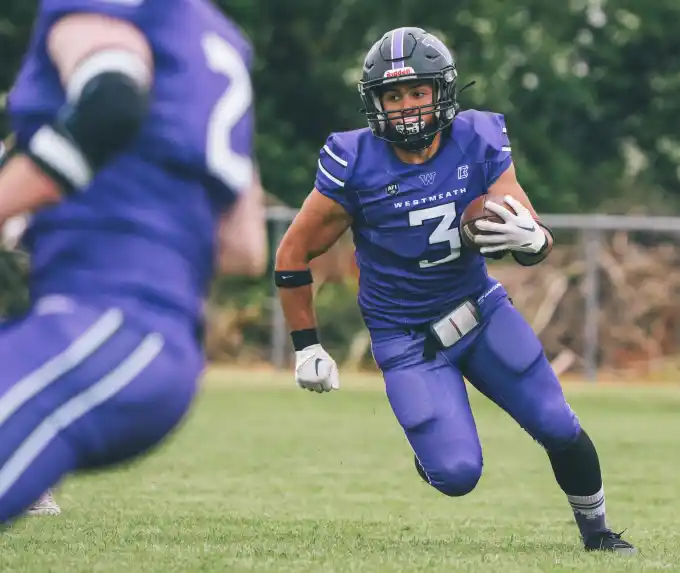

Westmeath Minotaurs
Upcoming Games
 Dublin Rebels
Dublin Rebels
 Belfast Trojans
Belfast Trojans
 Cork Admirals
Cork Admirals
About Us

American Football is the fastest-growing sport in Ireland for a reason. It's not just about brute strength or speed — it's about strategy, teamwork, and commitment. Every play is a battle of minds and bodies, where success depends on every single player doing their job with precision and dedication. No other sport demands this level of unity, tactical awareness, and split-second decision-making, and that's exactly what makes it so rewarding and addictive for players and fans alike.
The beauty of American Football is that there's a role for everyone, regardless of their physical attributes or athletic background. Big or small, tall or compact, quick or powerful — every build and skill set has its purpose and place on our roster. With 88 positions across offense, defense, and special teams, no two roles are the same or require identical abilities. Some positions require explosive speed and agility, others focus on raw strength and power, while some demand cool-headed decision-making under intense pressure and the ability to read complex defensive schemes. Whatever your background, previous athletic experience, or current fitness level, we will find your perfect place on the field — and you will make a meaningful, measurable impact on our team's success.
At the Westmeath Minotaurs, we pride ourselves on developing players from the ground up, transforming complete beginners into competitive athletes. Most of our current players had never touched a football before joining our ranks, and now they're competing at the highest levels across Ireland's American Football leagues. Our experienced coaching staff, many of whom have played and coached internationally, will guide you every step of the way — from learning the fundamental techniques and mastering your specific position, to understanding the complex tactics, formations, and teamwork principles that truly define this incredible sport.
All we ask for is genuine commitment and a willingness to learn and grow. Show up consistently, put in the effort during training sessions, trust the process, and embrace the challenges that come with mastering a new sport. You'll gain not only technical skill and physical confidence, but also lifelong friendships, mental toughness, and a sense of belonging and brotherhood that's incredibly hard to find anywhere else in modern life. On this team, every single player matters and contributes to our collective success — because true victory is built together, one play at a time, through shared sacrifice and unwavering determination.
So whether you're looking for a new physical and mental challenge, a highly competitive team sport that pushes your limits, or simply a tight-knit community and team to call your own — step up with courage, suit up with pride, and become a Minotaur. The field is waiting for you, and your teammates are ready to welcome you into our growing family of warriors.